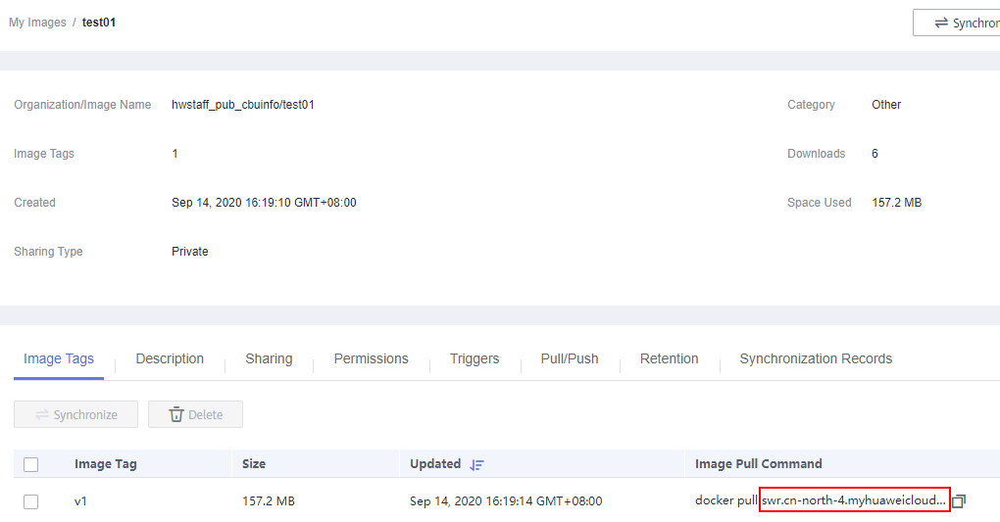

After creating and uploading a custom image to SWR, you can use the image to create a training job on the ModelArts management console to complete model training.
Prerequisites
- You have created a custom image package based on ModelArts specifications. For details about the specifications you need to comply with when using a custom image to create training jobs, see Specifications for Custom Images Used for Training Jobs.
- You have uploaded the custom image to SWR. For details, see Creating and Uploading a Custom Image.
Creating a Training Job
Log in to the ModelArts management console and create a training job according to Creating a Training Job. When using a custom image to create a job, pay attention to the settings of Algorithm Source, Environment Variable, and Resource Pool.
- Algorithm Source
Select Custom.
- Image Path: SWR URL after the image is uploaded to SWRFigure 1 SWR image address
 - Code Directory: OBS path for storing the training code file.
- Boot Command: boot command after the image is started. The basic format is as follows:
bash /home/work/run_train.sh {UserCommand}
bash /home/work/run_train.sh [python/bash/..] {file_location} {file_parameter}
run_train.sh is the training boot script. After this script is executed, ModelArts recursively downloads all content in the code directory to the local path of the container. The local path is in the format of /home/work/user-job-dir/${Name of the last level in the code directory}/.
For example, if the OBS path of the training code file is obs://obs-bucket/new/train.py and the code directory is obs://obs-bucket/new/, the local path of the container is /home/work/user-job-dir/new/. The local training code path of the container is /home/work/user-job-dir/new/train.py. Then, you can set the boot command to the following: bash /home/work/run_train.sh python /home/work/user-job-dir/new/train.py {python_file_parameter}

If you create a training job using a custom image, ModelArts allows you to customize the boot command. The following are two basic formats for the boot command:
bash /home/work/run_train.sh {UserCommand}
bash /home/work/run_train.sh [python/bash/..] {file_location} {file_parameter}
run_train.sh is the training boot script. When creating a custom image, you can implement the training boot script or place the training code in the custom image environment in advance to customize the boot command (in the basic formats or any other formats).
- Image Path: SWR URL after the image is uploaded to SWR
- Environment Variable
After the container is started, besides the environment variables added by configuring Environment Variable during training job creation, Table 1 lists other environment variables to be loaded. You can determine whether to use these environment variables in your own Python training script, or run the {python_file_parameter} command to pass the required parameters.
Table 1 Optional environment variables Environment Variable
Description
DLS_TASK_INDEX
Container index, starting from 0.
DLS_TASK_NUMBER
Number of containers, corresponding to Compute Nodes
DLS_APP_URL
Code directory, corresponding to Code Dir with the protocol name added. For example, you can use $DLS_APP_URL/*.py to read files in OBS.
DLS_DATA_URL
Dataset path, corresponding to Data Source with the protocol name added
DLS_TRAIN_URL
Training output path, corresponding to Training Output Path with the protocol name added
BATCH_{jobName}.0_HOSTS (standalone)
For standalone training, that is, when the number of compute nodes is 1, the environment variable is BATCH_{jobName}.0_HOSTS.
The format of the HOSTS environment variable is hostname:port. A container can view the HOSTS of all containers in the same job, such as BATCH_CUSTOM0_HOSTS and BATCH_CUSTOM1_HOSTS, varying according to the indexes. If the resource pool is a dedicated resource pool with the 8GPU specifications, the network type of the container is a host network, and the host IB network can be used to accelerate communications. If other resource pools are used, the network is a container network.
NOTE:When the host IB network is used for communication acceleration, the ip_mapper.py tool is required to obtain the IP address of the ib0 NIC for using the IPoIB feature.
- Resource Pool
If you select a resource pool of the GPU type, ModelArts mounts NVME SSDs to the /cache directory. You can use this directory to store temporary files.
Running a Training Job Created Using a Custom Image
After a custom image is uploaded to SWR, ModelArts is authorized to obtain and run the image by default when you create a training job using the custom image. When a custom image is run for the first time, the image is checked first. For details about the check, see Specifications for Custom Images Used for Training Jobs. The check failure cause is outputted in the log, and you can modify the image based on the log.
After the image is checked, the backend starts the custom image container to run the training job. You can view the training status based on the log.
After an image is reviewed, the image does not need to be reviewed again when being used to create training jobs again.